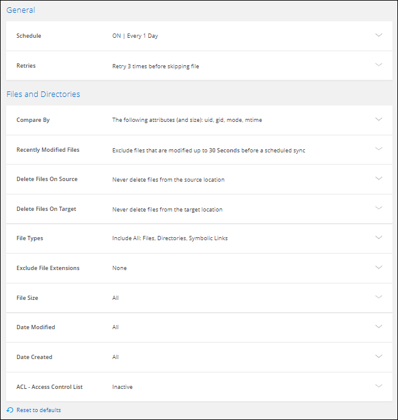

릴리스 정보
릴리스 정보
동기화 관계 관리
 변경 제안
변경 제안
데이터를 즉시 동기화하고 일정을 변경하는 등 동기화 관계를 언제든지 관리할 수 있습니다.
즉각적인 데이터 동기화를 수행합니다
예약된 다음 동기화를 기다리지 않고 버튼을 눌러 소스와 타겟 간에 데이터를 즉시 동기화할 수 있습니다.
-
Dashboard * 에서 동기화 관계로 이동하고 를 선택합니다

-
지금 동기화 * 를 선택한 다음 * 동기화 * 를 선택하여 확인합니다.
BlueXP 복사 및 동기화는 관계에 대한 데이터 동기화 프로세스를 시작합니다.
동기화 성능을 가속화합니다
관계를 관리하는 그룹에 추가 데이터 브로커를 추가하여 동기화 관계의 성능을 가속화합니다. 추가 데이터 브로커는 _new_data 브로커여야 합니다.
데이터 브로커 그룹이 다른 동기화 관계를 관리하는 경우 그룹에 추가한 새 데이터 브로커가 동기화 관계의 성능을 가속화합니다.
예를 들어, 다음과 같은 세 가지 관계가 있다고 가정해 보겠습니다.
-
관계 1은 데이터 브로커 그룹 A에서 관리합니다
-
관계 2는 데이터 브로커 그룹 B에 의해 관리됩니다
-
관계 3은 데이터 브로커 그룹 A에서 관리합니다
관계 1의 성능을 가속화하여 데이터 브로커 그룹 A에 새로운 데이터 브로커를 추가하고 싶을 것입니다 그룹 A도 동기화 관계 3 을 관리하므로 관계의 동기화 성능도 자동으로 빨라집니다.
-
관계에 있는 기존 데이터 브로커 중 하나 이상이 온라인 상태인지 확인합니다.
-
Dashboard * 에서 동기화 관계로 이동하고 를 선택합니다
-
Accelerate * 를 선택합니다.
-
프롬프트에 따라 새 데이터 브로커를 생성합니다.
BlueXP 복사 및 동기화는 새 데이터 브로커를 그룹에 추가합니다. 다음 데이터 동기화의 성능을 가속해야 합니다.
업데이트 가능성
기존 동기화 관계에서 소스 또는 타겟의 최신 자격 증명으로 데이터 브로커를 업데이트할 수 있습니다. 보안 정책에 따라 자격 증명을 정기적으로 업데이트해야 하는 경우 자격 증명을 업데이트하는 것이 도움이 될 수 있습니다.
BlueXP 복사 및 동기화에 Azure Blob, Box, IBM Cloud Object Storage, StorageGRID, ONTAP S3 Storage, SFTP 및 SMB 서버의 자격 증명이 필요한 소스 또는 타겟에서는 자격 증명 업데이트가 지원됩니다.
-
동기화 대시보드 * 에서 자격 증명이 필요한 동기화 관계로 이동한 다음 * 자격 증명 업데이트 * 를 선택합니다.

-
자격 증명을 입력하고 * Update * 를 선택합니다.
SMB 서버에 대한 참고 사항: 도메인이 새로운 경우 자격 증명을 업데이트할 때 지정해야 합니다. 도메인이 변경되지 않은 경우 다시 입력할 필요가 없습니다.
동기화 관계를 만들 때 도메인을 입력했지만 자격 증명을 업데이트할 때 새 도메인을 입력하지 않은 경우 BlueXP 복사 및 동기화는 사용자가 제공한 원래 도메인을 계속 사용합니다.
BlueXP 복사 및 동기화는 데이터 브로커의 자격 증명을 업데이트합니다. 데이터 브로커가 데이터 동기화를 위해 업데이트된 자격 증명을 사용하기 전까지 10분 정도 걸릴 수 있습니다.
알림을 설정합니다
각 동기화 관계에 대한 * 알림 * 설정을 사용하면 BlueXP 알림 센터에서 BlueXP 복사 및 동기화 알림을 수신할 것인지 선택할 수 있습니다. 성공적인 데이터 동기화, 실패한 데이터 동기화 및 취소된 데이터 동기화를 위한 알림을 활성화할 수 있습니다.

또한 이메일로 알림을 받을 수도 있습니다.
-
동기화 관계에 대한 설정을 수정합니다.
-
Dashboard * 에서 동기화 관계로 이동하고 를 선택합니다
-
설정 * 을 선택합니다.
-
알림 * 을 활성화합니다.
-
설정 저장 * 을 선택합니다.
-
-
이메일로 알림을 받으려면 알림 및 알림 설정을 구성합니다.
-
설정 > 경고 및 알림 설정 * 을 선택합니다.
-
사용자 또는 여러 사용자를 선택하고 * 정보 * 알림 유형을 선택합니다.
-
Apply * 를 선택합니다.
-
BlueXP 알림 센터에서 BlueXP 복사 및 동기화 알림을 받게 되며, 이 옵션을 구성한 경우 이메일로 몇 가지 알림을 받게 됩니다.
동기화 관계에 대한 설정을 변경합니다
원본 파일 및 폴더가 대상 위치에서 동기화 및 유지되는 방식을 정의하는 설정을 수정합니다.
-
Dashboard * 에서 동기화 관계로 이동하고 를 선택합니다
-
설정 * 을 선택합니다.
-
설정을 수정합니다.

- 스케줄
-
향후 동기화를 위한 반복 일정을 선택하거나 동기화 일정을 해제합니다. 1분마다 데이터를 동기화하도록 관계를 예약할 수 있습니다.
- 동기화 시간 초과
-
지정된 분, 시간 또는 일 수 동안 동기화가 완료되지 않은 경우 BlueXP 복사 및 동기화가 데이터 동기화를 취소할지 여부를 정의합니다.
- 알림
-
BlueXP의 알림 센터에서 BlueXP 복사 및 동기화 알림 수신 여부를 선택할 수 있습니다. 성공적인 데이터 동기화, 실패한 데이터 동기화 및 취소된 데이터 동기화를 위한 알림을 활성화할 수 있습니다.
에 대한 알림을 수신하려는 경우
- 다시 시도
-
파일을 건너뛰기 전에 BlueXP 복사 및 동기화가 다시 시도해야 하는 횟수를 정의합니다.
- 비교 기준
-
파일 또는 디렉토리가 변경되었으며 다시 동기화되어야 하는지 여부를 결정할 때 BlueXP 복사 및 동기화가 특정 속성을 비교해야 하는지 여부를 선택합니다.
이러한 속성을 선택 취소하더라도 경로, 파일 크기 및 파일 이름을 확인하여 BlueXP 복사 및 동기화는 여전히 소스를 대상과 비교합니다. 변경 사항이 있으면 해당 파일과 디렉토리를 동기화합니다.
다음 속성을 비교할 때 BlueXP 복사 및 동기화를 활성화 또는 비활성화할 수 있습니다.
-
* mtime *: 파일의 마지막 수정 시간입니다. 이 속성은 디렉토리에 대해 유효하지 않습니다.
-
* uid *, * gid * 및 * 모드 *: Linux용 권한 플래그
-
- 개체 복사
-
관계를 만든 후에는 이 옵션을 편집할 수 없습니다.
- 최근에 수정된 파일
-
예약된 동기화 전에 최근에 수정된 파일을 제외하도록 선택합니다.
- 소스에서 파일 삭제
-
BlueXP 복사 후 소스 위치에서 파일을 삭제하고 파일을 타겟 위치에 동기화하도록 선택합니다. 이 옵션에는 원본 파일이 복사된 후 삭제되므로 데이터가 손실될 위험이 포함됩니다.
이 옵션을 활성화하면 데이터 브로커에서 local.json 파일의 매개 변수도 변경해야 합니다. 파일을 열고 다음과 같이 업데이트합니다.
{ "workers":{ "transferrer":{ "delete-on-source": true } } }로컬 .json 파일을 업데이트한 후 다시 시작해야 합니다.
pm2 restart all. - 대상에서 파일 삭제
-
파일이 소스에서 삭제된 경우 대상 위치에서 파일을 삭제하도록 선택합니다. 기본값은 대상 위치에서 파일을 삭제하지 않는 것입니다.
- 파일 형식
-
파일, 디렉토리, 심볼 링크 및 하드 링크 등 각 동기화에 포함할 파일 유형을 정의합니다.

하드 링크는 보안되지 않은 NFS 대 NFS 관계에만 사용할 수 있습니다. 사용자는 하나의 스캐너 프로세스와 하나의 스캐너 동시 접속으로 제한되며 루트 디렉터리에서 스캔을 실행해야 합니다. - 파일 확장명 제외
-
파일 확장자를 입력하고 * Enter * 를 눌러 동기화에서 제외할 regex 또는 파일 확장자를 지정합니다. 예를 들어, *.log 파일을 제외하려면 _log_또는 _.log_를 입력합니다. 여러 확장자에 대해 구분 기호가 필요하지 않습니다. 다음 비디오는 짧은 데모를 제공합니다.
정규식 또는 정규식은 와일드카드나 glob 식과 다릅니다. 이 기능은 * 만 * regex와 함께 사용할 수 있습니다. - 제외 디렉터리
-
이름 또는 디렉토리 전체 경로를 입력하고 * Enter * 를 눌러 동기화에서 제외할 최대 15개의 regex 또는 디렉토리를 지정합니다. copy-offload, .snapshot, ~snapshot 디렉토리는 기본적으로 제외됩니다.
정규식 또는 정규식은 와일드카드나 glob 식과 다릅니다. 이 기능은 * 만 * regex와 함께 사용할 수 있습니다. - 파일 크기
-
파일 크기나 특정 크기 범위에 있는 파일에 관계없이 모든 파일을 동기화하도록 선택합니다.
- 수정한 날짜
-
마지막으로 수정한 날짜, 특정 날짜 이후 수정된 파일, 특정 날짜 이전 또는 시간 범위 사이에 관계없이 모든 파일을 선택합니다.
- 만든 날짜
-
SMB 서버가 소스인 경우 이 설정을 사용하면 특정 날짜 이후, 특정 날짜 이전 또는 특정 시간 범위 간에 생성된 파일을 동기화할 수 있습니다.
- ACL - 액세스 제어 목록
-
관계를 만들 때 또는 관계를 만든 후에 설정을 활성화하여 SMB 서버에서 ACL만, 파일 전용 또는 ACL 및 파일을 복사합니다.
-
설정 저장 * 을 선택합니다.
BlueXP 복사 및 동기화는 새 설정과 동기화 관계를 수정합니다.
관계 삭제
소스와 타겟 간에 데이터를 더 이상 동기화할 필요가 없는 경우 동기화 관계를 삭제할 수 있습니다. 이 작업으로 데이터 브로커 그룹(또는 개별 데이터 브로커 인스턴스)은 삭제되지 않으며, 대상에서 데이터가 삭제되지 않습니다.
옵션 1: 단일 동기화 관계를 삭제합니다
-
Dashboard * 에서 동기화 관계로 이동하고 를 선택합니다
-
삭제 * 를 선택한 다음 * 삭제 * 를 다시 선택하여 확인합니다.
BlueXP 복사 및 동기화는 동기화 관계를 삭제합니다.
옵션 2: 여러 동기화 관계를 삭제합니다
-
Dashboard * 에서 "Create New Sync" 버튼으로 이동하여 를 선택합니다
-
삭제할 동기화 관계를 선택하고 * 삭제 * 를 선택한 다음 * 삭제 * 를 다시 선택하여 확인합니다.
BlueXP 복사 및 동기화는 동기화 관계를 삭제합니다.